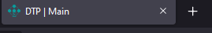

1. Index
Info
Dokumentacja dotycząca strony Katedry Fizyki Teoretycznej znajdującej się aktualnie pod adresem kft.pwr.edu.pl
1.1 Oprogramowanie
Mkdocs
Następująca dokumentacja jest tworzona przy pomocy frameworka Mkdocs na templacie Material. Mkdocs jest budowane na bazie formatowania Markdown. Zasadniczo, aby dokonywać zmian w tej dokumentacji dla przyszłych pokoleń należy umieć Markdown (co nie jest trudne) i mieć zainstalowany framework Mkdocs
Webmin
Dostęp do plików strony jest na serwerach Webmin pod adresem https://webmin2.wcss.wroc.pl lub dowolnym oprogramowaniu obsługującym SCP. Ze względów bezpieczeństwa dane dostępowe nie są tutaj nigdzie dostępne.
Strona Katedry
Strona Katedry Fizyki Teoretycznej jest budowana przy pomocy HTML oraz PHP. Aby zarządzać stroną wystarczy znać te dwa "języki". Oczywiście znajomość Javascripta również jest przydatna.
PHP
Jeśli nigdy nie pisałeś/łaś w PHP to zapewne się zdziwisz, że zwykłe "uruchomienie" pliku w przeglądarce jak w przypadku statycznych plików HTML nie zdaje efektu. Dlatego warto zapoznać się z oprogramowaniem "stawiającym" serwer z obsługą PHP. Osobiście polecam XAMPP. Jest prosty w użyciu i ułatwia pracę przy edytowaniu strony.
1.2 Jak wprowadzać zmiany
Aby wprowadzić zmiany na stronie (takie jak dodanie nowych pracownikow) kieruj się wskazówkami na poszczególnych podstronach, np. aby dodać nowego pracownika przeczytaj instrukcje na podstronie "Podstrona People" pod kategorią "Jak wprowadzać zmiany".
1.3 Lista podstron
Strona aktualnie składa się z następujących podstron:
{kind=link}
- Home strona domowa dostępna pod
index.php - People strona z listą pracowników dostępna pod
people.php - Research groups strona z listą grup naukowych dostępna pod
research-groups.php - Projects strona z listą projektów dostępna pod
projects.php - Seminar strona z kalendarzem seminariów dostępna pod
seminar.php - Students strona z informacjami dla studentów dostępna pod
students.php - Gallery strona z galeriami dostępna pod
gallery.php- Podstrona
MiniSympozjum2022.phpdogallery.mdzawiera galerię z Mini Sympozjum KFT
- Podstrona
- Folder
csszawiera pliki stylu - Folder
fontszawiera pliki fontów - Folder
imageszawiera pliki obrazów - Folder
includeszawiera pliki zaciągane przez główne podstrony - Folder
jszawiera pliki javascript - Folder
statsjest automatycznie generowany przez serwer webmin i zawiera obrazki ze statystykami użycia
1.4 Układ plików
Każda z podstron składa się z 4 części: header, main, company i footer, np. dla podstrony głównej "Home":
<!-- Header and navbar -->
<?php
$selected = "index";
$header_text = "Main";
require('includes/main/header.php');
?>
<!-- Main page -->
<section id="page" class="index">
...
</section>
<!-- Company -->
<?php require('includes/main/company.php'); ?>
<!-- Footer -->
<?php require('includes/main/footer.php'); ?>
<!-- To top button -->
<a href="#main-header" id="to-top-button" class="button-scroll"></a>
</body>
</html>
Header, company i footer dla wszystkich podstron jest wspólny i zaciąga dane z odpowiedniego pliku (więcej info niżej), przykład:
<!-- Header and navbar -->
<?php
$selected = "index";
$header_text = "Main";
require('includes/main/header.php');
?>
<!-- Company -->
<?php require('includes/main/company.php'); ?>
<!-- Footer -->
<?php require('includes/main/footer.php'); ?>
Polecenie require wymaga danego załadowania do działania strony. Zapobiega to załadowaniu się strony, gdy brakuje niezbędnego elementu, jak na przykład paska nawigacji!
Każda podstrona zwiera również linijkę <a href="#main-header" id="to-top-button" class="button-scroll"></a>, która jest potrzebna do auto-scrolla
1.4.1 Main
Element main zaczynający się od komentarza <!-- Main page --> dla każdej storny jest inny (zaciąga inne pliki), w celu sprawdzenia działania dla każdej podstrony zajrzyj do poświęconej każdej z nich zakładki w tej dokumentacji.
1.4.2 Header
{kind=link}
Zawiera logo departamentu oraz pasek nawigacyjny, zaciąga się z pliku includes/main/header.php. Wykorzystuje dwie zmienne
$selected = "index"która ustala jaki element w pasku nawigacyjnym podświetlić$header_text = "Main"która ustala jaki napis wyświetlić na zakładce przeglądarki 
{kind=link}
1.4.3 Company
{kind=link}
Zawiera informacje kontaktowe departamentu, zaciąga się z pliku includes/main/company.php
1.4.4 Footer
{kind=link}
Zawiera informacje licencyjne departamentu, zaciąga się z pliku includes/main/footer.php